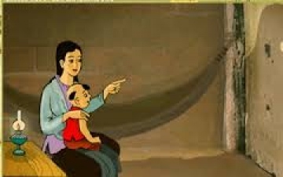

Nghệ thuật
Tác phẩm "Chuyện người con gái Nam Xương" là một áng văn xuôi bất hủ trong nền văn học trung đại Việt Nam nhờ sự kết hợp tài tình của các yếu tố nghệ thuật đặc sắc:
1. Tình huống truyện độc đáo & Chi tiết chiếc bóng
Xây dựng tình huống truyện độc đáo, đặc biệt là chi tiết chiếc bóng. Chi tiết chiếc bóng đóng vai trò nòng cốt: vừa là chi tiết thắt nút gieo rắc sự nghi ngờ đẩy câu chuyện lên đỉnh điểm bi kịch, vừa là chi tiết mở nút giải tỏa nỗi oan khuất cho Vũ Nương.
2. Nghệ thuật dựng truyện
Truyện được dẫn dắt bởi tình huống truyện hợp lý, tự nhiên, diễn biến kịch tính, hấp dẫn và lôi cuốn người đọc từ đầu đến cuối.
3. Xây dựng nhân vật qua lời nói và hành động
Nghệ thuật trần thuật và ngôn ngữ đối thoại của nhân vật vô cùng đặc sắc. Qua từng lời dặn dò, phân trần thiết tha của Vũ Nương và hành động độc đoán của Trương Sinh, tính cách và phẩm hạnh của các nhân vật được khắc họa sâu sắc.
4. Sử dụng yếu tố kỳ ảo
Sử dụng yếu tố kỳ ảo, hoang đường làm cho câu chuyện vừa thực vừa mơ, vừa có hậu vừa bi kịch, từ đó làm hoàn chỉnh vẻ đẹp trọn vẹn của nhân vật Vũ Nương và làm nổi bật giá trị nhân đạo của tác phẩm.
5. Kết hợp phương thức biểu đạt
Truyện có sự kết hợp nhuần nhuyễn giữa các phương thức biểu đạt: tự sự + biểu cảm, tạo nên một áng văn xuôi bất hủ sống mãi với thời gian.
